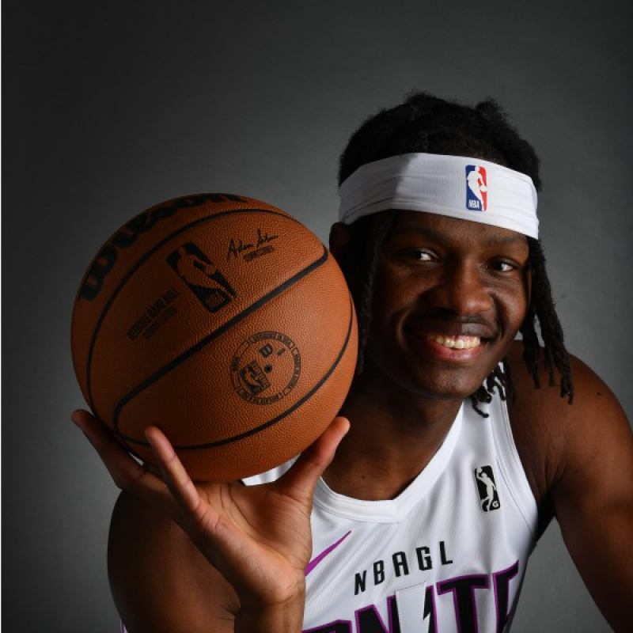

01 / Profile
Profile.
The person behind the player. A journey shaped by movement, curiosity, and growth.

Professional athlete
My journey began in Nigeria, where I discovered basketball and developed the ambition that continues to guide me today. It then took me to Senegal, where joining NBA Academy Africa opened the first major door in my development and showed me what could be possible through the game.
From Senegal, I continued to the NBA Global Academy in Australia before moving to the United States. There, I competed at Washington State University and began my professional career with NBA G League Ignite. I later played for the Rio Grande Valley Vipers and represented the Denver Nuggets during the 2026 NBA Summer League.
Now, my journey continues in Spain with Monbus Obradoiro in Liga Endesa. This next chapter is another opportunity to compete, experience a new culture, and continue developing at one of Europe’s highest levels of basketball.
Alongside my professional career, I earned my bachelor’s degree in Anthropology from Arizona State University, with a minor in Geographic Information Science (GIS). My education strengthened my interest in understanding people, places, and the connections between them.
What continues to drive me is the opportunity to keep growing and to use everything I have learned through sport, education, and living across different cultures. I want my career to represent more than performance on the court. I want it to reflect curiosity, discipline, and a commitment to creating opportunities that extend beyond basketball.
one global journey
at Washington State
Liga Endesa experience
and GIS minor